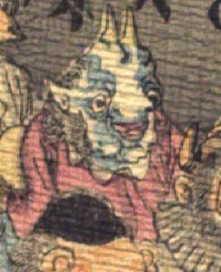

青い顔の鬼。額は割れ、角が2本生えている。目玉は丸く、鼻は牛を思わせる。耳は尖っている。口を開けている。あごの肉はたるんでいる。赤い衣服を着ている。
著作者：J.Dautremer／出典：親書誌：U426_nichibunken_0123：Le vieillard et les démons／日付：2006／資源識別子：U426_nichibunken_0123_0003_0003
Copyright (c)2010- International Research Center for Japanese Studies, Kyoto, Japan. All rights reserved.